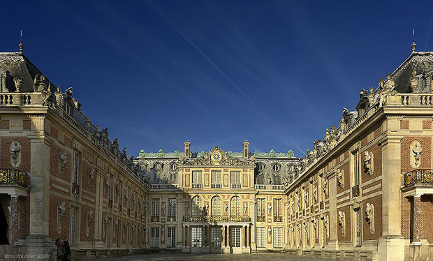

Paris is famous for its landmarks like the Eiffel Tower, but there are also many other landmarks that are world renowned like the Champs-Elysees for its shopping, fashion and culture, along with its history, you will never be without somewhere to go or something to do in Paris.

The Palace of Versailles, or simply Versailles, is a royal château in Versailles in the Île-de-France region of France. In French it is the Château de Versailles.
When the château was built, Versailles was a country village; today, however, it is a suburb of Paris, some 20 kilometres southwest of the French capital. The court of Versailles was the centre of political power in France from 1682, when Louis XIV moved from Paris, until the royal family was forced to return to the capital in October 1789 after the beginning of the French Revolution. Versailles is therefore famous not only as a building, but as a symbol of the system of absolute monarchy of the Ancien Régime.
The earliest mention of the name of Versailles is found in a document dated 1038, the Charte de l'abbaye Saint-Père de Chartres (Charter of the Saint-Père de Chartres Abbey) (Guérard, 1840), in which one of the signatories was a certain Hugo de Versailliis (Hugues de Versailles), who was seigneur of Versailles. During this period, the village of Versailles centred on a small castle and church and the area was governed by a local lord. Its location on the road from Paris to Dreux and Normandy brought some prosperity to the village but, following an outbreak of the Plague and the Hundred Years' War, the village was largely destroyed and its population sharply declined (Bluche, 1991; Thompson, 2006; Verlet, 1985)
In 1575, Albert de Gondi, a naturalized Florentine who gained prominence at the court of Henry II, purchased the seigneury of Versailles. In the early seventeenth century, Gondi invited Louis XIII on several hunting trips in the forests surrounding Versailles. Pleased with the location, Louis ordered the construction of a hunting lodge in 1624. Designed by Philibert Le Roy, the structure, a small château, was constructed of stone and red brick with a based roof. Eight years later, Louis obtained the seigneury of Versailles from the Gondi family and began to make enlargements to the château (Batiffol, 1913; Bluche, 1991; Marie, 1968; Nolhac, 1901; Verlet, 1985).
Louis XIV had played and hunted at the site as a boy. This structure would become the core of the new palace.